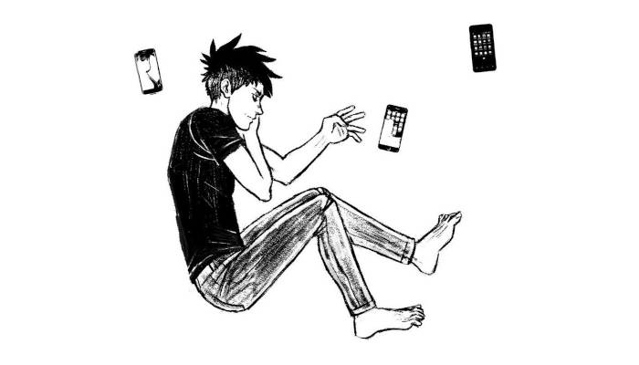

About
About Projects
Projects Books
Books Games
Games Stories
Stories Store
Store Notes
Notes How-to
How-toA collection of articles, stories, instructions, on a variety of subjects.
Because of content spinning and garbage generators like ChatGPT, it is becoming harder to use search engines to find good sources of information on the internet. To combat this, we need to gather and share links written by experienced and well-meaning humans. I encourage you to keep your own list of bookmarks on your website, and to link to other lists.
First of all, gives these alternative search engines and/or web directories a go. I encourage you to submit worthwhile sites that you find to help build up a quality of database of good websites:
Hey you! Yes, you, fantastic human, here's a button for my website, should you want to link to it:

Categories
- Internet
- Fun
- Technology
- Climate Knowledge
- Sailing
- Boating BC
- Gardening
- Preparedness
- Gender
- Specieism
- Design
- DIY
- Cooking
- Language
- Articles/Blogposts
- Videos
- Lists of Links
- Games
- Art
- Stores
- Cycling
- Webrings
- RSS
- Buttons
Internet
- Configuring Firefox(privacy/no tracking), Sciops.net
- Alt-text as poetry
- The Website Obesity Crisis (Internet)
- Social media and parasocial media (Internet)
- Pikselkraft (Low-tech web)
Go back to Top.
Fun
- The Pinocchioverse
- Radio Taiso(exercise).
Go back to Top.
Technology
- Steam Vehicles
- Low-Tech Labs
- Nomadic Research Labs
- The Right to Repair
- Low Tech Magazine
- Dangerous Laboratories: scientific, industrial, and alternative energy projects
- Other Power: Make Your Electricity From Scratch
- Street Use (Low-tech, Repair/Reuse)
Go back to Top.
Climate knowledge
- Heated: for people who are pissed off about the climate crisis (Newsletter)
- Design life cycle
- Should we go vegan? (Wikidebate)
- Nature as an Ally (Wendell Berry Interview)
Go back to Top.
Sailing
- Roger Taylor (Junk Rig, Solo Sailor)
- How to Scull a Boat (How-to)
- Building a dinghy (How-to).
- LadyJacks (Radical Feminist Sailors)
- SY Bosun Bird (World sailors, Canadian)
- SY Dawn Treader (World Sailors, Projects)
- SY Tari Tari (Sailor, Jute Sailboat)
- gunwale and hull cushioning (How-to, Article).
- defensive boating (How-to, Article)
- the black box theory
- Sven Irvind (Sailor, Small DIY Sailboat)
- C.C. O'Hanlon (Nomad, Sailor, Writer)
- Annie Hill (Junk-Rig)
- Speedwell Adventures (Junk Rig, Solo Sailor)
- Sailing Auklet (Small Junk Rig)
- Cheap Pages (Boatbuilding, DIY, Resources)
- Not All Who Wander Are Lost (Ferrocement, Gaff Rig)
- SY Muktuk (World sailors, German)
- SY Robusta (World sailors, Swiss)
- Nowhere soup (Pacific ocean sailors, American)
- SY Sunstone (World sailors, English)
Go back to Top.
Boating(Canada)
- Metport (Detailed Wind Visualizations)
- River Nomads, Liveaboards, Canal-Dwellers and Other People of the Water (Liveaboard, Collapse)
- Vessels of Concern: Signs of the Times (Liveaboard, Collapse)
Go back to Top.
Gardening
- Wild Heart Homestead (Permaculture)
- Compost Guy (Bokashi etc)
Go back to Top.
Preparedness
- A Free Manual for Practicing Insurrectionary Medicine
- Ecodefense: A Field Guide to Monkeywrenching
- How to Build a Corsi-Rosenthal Box(JPG, Wikipedia).
- Dark Mountain Manifesto
- Traction Project (Self-Defense, Repair, LGBTQIA+)
Go back to Top.
Gender
- Respecter la non-binarité de genre en français
- Resolving One Long-Standing Insecurity and Proposing Another (Article, Personal blog)
Go back to Top.
Specieism
Go back to Top.
Design
- Pixel perfect handbook
- Dither it(Online Dithering Tool)
- RNS Stitch Bank
- Latex Title Pages(PDF file[978 kB], Examples)
Go back to Top.
DIY
- Hybrid-Electric Small Vessel Drive (DIY Hybrid Electric System for Small Sailboats)
- How to Make Cables and Harness Splices (Nasa, How-to)
- Shoelace Knots (How-to)
- five hole pamphlet stitch
- Fabric calculator (Sailrite, Tool)
Go back to Top.
Cooking
- Save food from the fridge (Design)
- Une Maman Vegane (Vegan Blog, QC)
- Domingo Club (Design, Fermentation)
- Ni cru ni cuit (Lacto-Fermentation)
- Nukazuke Tutorial (Japanese Fermentation Technique)
- Oat-gurt (Fermentation, Recipe)
Go back to Top.
Language
- Toki Pona word list (Reference, Wikibooks)
- Toki Pona cheat sheet (PDF[119 KB])
- politics and the english language (George Orwell)
- On Discourse
Go back to Top.
Articles/blog posts
I've separated these links from the rest because I vouch for the quality of each specific article, not of the entire website.
- The Work of Creation in the Age of AI (Art, Deep Meaning, Critique)
- Everything in its place (Design)
- How to do Nothing (Attention Economy)
- Sick Systems (Psychology, manipulation).
- What Progress Means (Technology)
- Sailing Farmer Post Carbon Future (Climate Knowledge)
- Water is life (Climate Knowledge)
- The Origins of Anti-Litter Campaigns (Climate Knowledge.
- 2012 Pacific Northwest Passage by SOL(Sailing Northern Waters)
- Adding a Tilt-up 9.8-hp Outboard Well to an Alberg 30 (How-to)
- Applying Coppercoat (DIY, Sailboat, Boatyard)
- Cheap Watermaker Plans (DIY, How-to, Boats)
- What do you Think About Chat GPT? (Technology)
Go back to Top.
Videos
- Manben (Daily Motion, Japanese show featuring reknowned mangakas)
- On Gender (YouTube, Gender)
- Siberian Guys Circumnavigated the Globe in a Catamaran (Documentary, Adventuring, Sailing)
- See How a Master Oufits Her Boat (YouTube, Offshore Sailor)
- Race to Alaska Movie
- Peter Knowles (YouTube, Wooden boat owner, tinkerer)
Go back to Top.
Other lists of links
Go back to Top.
Personal Websites(wikis)
- XXIIVV (Artist, Dev, Sailor)
- Avi Bryant (Tinkerer, BC)
- Ritual Dust (Folk/Fantasy Artist, MTL)
- Kira Oakley (Solar punk, Anti-Capitalist Tech, BC)
- Everest Pipkin (Software Artist, Games, US)
- Frog shark (Game Programmer, Sailor, NZ)
- Klardotsh (Sailor, Software Dev)
- Nomand (Hardware, Artist, Sailor, NZ)
- Jes (Human-Scale Code, Van life, US)
- James Chip (Appreciator of Mosses, Games)
Go back to Top.
Games
- Ko-op studio (Indie games, MTL)
- Double Stallion (Indie games, MTL)
- Popagenda (Game producers for hire, MTL)
- Juicy Beast (Indie games, MTL)
- Ocean Mouse (Indie games, TO)
- Thunder Lotus (Indie games, MTL)
- Neon Rumble (Indie games, MTL)
- Lexaloffle (Game artist, Pico8, programmer)
- Ellugar (Indie Games, MX)
- Etter studio (Games, Design)
- Nina Freeman (Poet, Game Dev)
Go back to Top.
Art
- Marianne Vincent (Game artist, MTL)
- The Sad Ghost Club (Art project, Mental Health Wwareness)
- Jours de Papier (Comic artist, Humor, MX)
- Villainette (Comics, Martial Arts)
- Cab, (Comic Artist, MTL)
- Boum (Animator, Comic artist, MTL)
- Genevieve FT (Pinup Art, Body Positivity, Tattoos)
- Mathieu Beaulieu (Cartoon artist, designer, MTL)
- Ideeez (Designer, JP)
- Matthew Forsythe (Illustrator, nature)
- Fran Krause (Comic artist, cartoon, horror)
- Emily Carroll (Illustrator, comics, horror)
- Kazu Kibuishi (Illustrator, storyteller)
- Hamlet Machine (Comics, nsfw)
- Feminist Sticker Club (Artwork, feminism)
- Android Arts (Concept artist, console concepts)
- Unknown Fields (Design research studio)
- Helvetica Blanc, (Illustrator, Worldbuilding)
- Dom2d (Game Artist, Mental Health Awareness, MTL)
- Ita Toys (Fashion, Design)
- Jenny Odell (Multidisciplinary Artist, Writer)
- Andrea England (Watercolor Artist, Sailor)
- Amanda Visell (Illustrator, Designer)
Go back to Top.
Stores
- Nervous system (Generative design, store)
- Valerie Bastille (Artist, MTL)
Go back to Top.
Cycling
- Tokyo by Bike (Navigating tokyo by bicycle, JP)
Go back to Top.
Webrings

Go back to Top.
RSS
Go back to Top.
Buttons


Go back to Top.